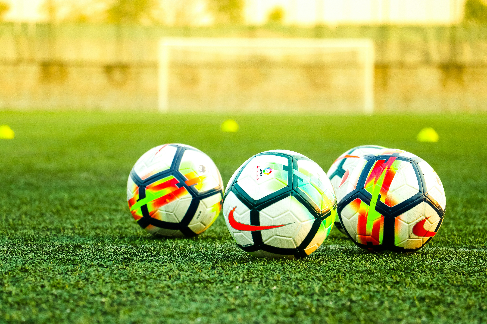

Fotboll – mer än bara ett spel
Fotboll är världens största sport och handlar om teknik, laganda, strategi och passion. På den här webbplatsen får du läsa om träning, taktik och vad som gör en spelare framgångsrik.
Träning och teknik

För att bli bättre i fotboll krävs regelbunden träning. En spelare behöver öva på passningar, skott, dribblingar, snabbhet och kondition. Tekniken är viktig eftersom den gör att spelaren kan fatta bättre beslut under press.
Taktik och lagspel

Ett lag behöver en tydlig taktik för att lyckas. Det kan handla om formationer, presspel, försvarsspel och hur laget anfaller. När alla spelare förstår sin roll blir laget mer organiserat och effektivt.
Vad kännetecknar en bra spelare?

En skicklig fotbollsspelare är inte bara tekniskt duktig. Spelaren behöver också ha god spelförståelse, vara disciplinerad och kunna samarbeta med andra. Mental styrka är också viktigt, särskilt i avgörande matcher.